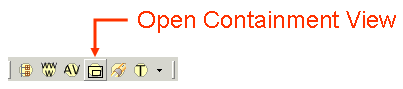

|
|
When a reference to a resource ("A") (say, a note) appears in another resource's ("B") reference or annotation area, the reference to B is said to be contained within A. Containment provides one of the major ways to organise materials in Pliny. Containment in Pliny does not, however, operate in a hierarchical structure: it is both true that any note "A" can contain references to more than one other note, but it is also true that references to A can appear in many other notes. The Containment View offers a visualisation of these containments so that you can manage them better.
The Containment View is opened by clicking on its icon in the main toolbar very near the very top of the Pliny window:

In response, the containment view will appear, and will normally place itself across the bottom edge of the Pliny window. If you'd rather have it somewhere else, drag it by the tab to one of the edges of the Pliny window (or right out of the Pliny window if you'd rather have it appear in an independant window). The containment view tends to be wider rather than tall, so it is often best to place it at the bottom or top of the Pliny screen rather than to the sides.
The containment view tracks the Pliny resource you are showing in the main editor window, and shows the containment structure associated withat that resource. As you switch from resource to resource in the main editor window the containment view will also recreate itself, showing you the structure of each resource you look at in turn.
The Containment View maps the containment information information attached to a resource (what references to other resources it contains, and what other resources contain reference to it) as a graph. When you first display the Containment View with a note such as:
... (a note which, itself, is referenced from two other notes) the Containment view might appear as:
Each box represents a resource, the arrows between them show the containment information. For example, we can see from the Note editor screenshot above that Wittig 1978 contains directly a reference to two resources. You can see them shown in the containment view with arrows going from Wittig 1978 to each of them. The direction of the arrow shows the containment -- it shows that the reference to "Wittig 1978: reading and semiotics" is contained within "Wittig 1978", for example. The colour of the arrowhead is the same as the colour of the reference object in the note, and is controlled by the type associated with the reference itself. There is more information about reference types and how to manage them in the reference section for the Type Manager.
Similarly, if we look above the box representing Wittig 1978 in the view we can see the two resources that contain references to Wittig 1978 -- here they are shown as one called Articles on CBTA, and one called Read Materials.
The containment manager can be asked to show the next level of containment around its primary resource as well. If we ask this of it (see the Commands section below for guidance about how this is done) we will see:
We have asked the view to show us the next level of containment under Wittig 1978. We can now see what the original note in the note editor also happened to show -- that the objects directly contained in Wittig 1978 also contain references to other objects themselves. Suppose we now ask to see the objects contained in Read Materials (above Wittig 1978 in this diagram) to see what other objects it refers to as well as Wittig 1978:
The graph is becoming more complex, but we can still see both Wittig 1978 and the objects it contains, and the two objects that contain references to Wittig 1978. In addition, we can see that Read Materials contains references to 5 other objects in addition to Wittig 1978.
Hopefully, this bit of information gives you a sense of how the Containment View operates, and how it might be useful to you. Note that although you can expand containment levels shown in the view, Pliny will not store the expansion for future reference -- if you close the Containment View and reopen it, or if you shut down Pliny altogether and restart it, you will find that the Containment View will start off showing only the current reference and the things that directly contain it, and that it directly contains.
Pliny's containment view is a display only -- you cannot use it to actually change any containment information that Pliny is storing for you. Thus, the commands that the containment view provides can only control what the view shows you -- not the information behind it.
Each box in the containment view represents a Pliny resource. To invoke most of the Pliny commands (but not all of them) you must select one or more of them. Select a resource by clicking on its display box. If you wish to select more than one, hold down the Shift key while clicking on the 2nd and third one. As you select Pliny will show you which one(s) has/have been selected by drawing a heavier box about it. Here is a fragment of the display with one item selected showing it:
Item Articles on CBTA is currently selected, whereas Wittig 1978 is not.
Once you have selected one or more objects you can request some operations to be performed on them. You do this by displaying the contextual menu (by clicking with the other mouse button (or, on the one-button Macintosh, clicking while the CTRL button is depressed) while the mouse pointer still points at one of your selected items. The contextual menu will look like this:
All the commands except for the last ("Included Types") will be applied to the currently selected items. Choose a command from the list by pointing at it and clicking. We will describe "Included Types" shortly. Here is a description of the other operations:
The Containment View shows containment references between objects but is configured by default to suppress references of type "source document". You might recall that source document references are automatically inserted as back references when referent support is in use. They are used to assert that a particular note comes from a particular source, and since they are pointers back from the point of view of the Containment View they often provide redundant information that makes the containment diagram unnecessarily complex.
Choose the Included Types List if you wish to change these assumptions. You will see a further list of types that you have in Pliny and by choosing items representing the types in the list you can choose to ask the Containment View to ignore or include all references that are of any of these types. Unless you have already changed the types selection you will see that references of type source document will be excluded and all others are included. If you change this setting Pliny will remember your new setting both for the rest of this session and for future Pliny sessions as well until you change it again.
 |
| Pliny Help Pages by John Bradley are licensed under a Creative Commons Attribution-Noncommercial-Share Alike 2.0 UK: England & Wales License. |